Before you start, a few things to know
This is the hub at night: patients across four rural hospitals, one intensivist watching all of them. Bridgeport is a critical access hospital. Tonight it has one nurse on the inpatient side, and its APP is on call from home.
- Open the prototype on Monitoring. If you've already played it, use Prototype › Reset prototype first.
- Tyler isn't on the page yet: Bridgeport's tab reads 5, the nurse's other patients, all stable. He arrives with the scenario, when his labs come back.
- New to the page? The Scenario 1 storyboard walks through the hospital tabs, the quick filters, the monitoring cards and the alert notifications.
- Once you accept his DKA pathway (beat 1), the rest of the night plays on its own over about 100 seconds. Keep his alert open with Pathway out, and scroll the column to follow the checklist.
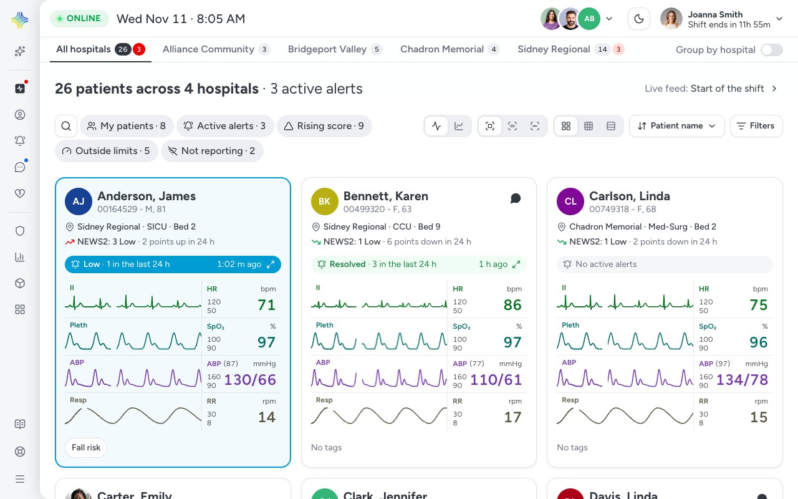
1. Protocol launch
23:00Tyler Kessler, 60. Type 1 diabetes since he was 11; he works at a grain elevator. He lost Medicaid at redetermination three months ago and has been stretching his insulin. His pH is 7.08, bicarbonate 6, anion gap 28, glucose 520, potassium 5.6. That's severe DKA, a 14-hour insulin drip with checks every hour, and Bridgeport has one nurse tonight. The intensivist starts the DKA pathway from the hub, and the nurse's screen becomes an hourly checklist.
Steps
- Open Prototype at the bottom of the Sidebar and pick Scenario 4: DKA.
- About 2 seconds later Tyler's card joins the page, first, with its red Critical bar: NEWS2 7, HR and RR outside their limits, and a Coverage lapsed flag. His alert toasts: Severe DKA: pH 7.08, gap 28.
- Click his card's alert bar, then Pathway. The DKA pathway is suggested: the insulin infusion at 0.1 units/kg/h (7 units/h), fluids, potassium per protocol and the hourly checks at the bedside.
- Click Accept. The orders go to Derek Lawson, PA-C, for co-signature, and about 2 seconds later the DKA insulin protocol opens under them: insulin 7 units/h, the first check in, and "Same checklist on Bridgeport's screen".
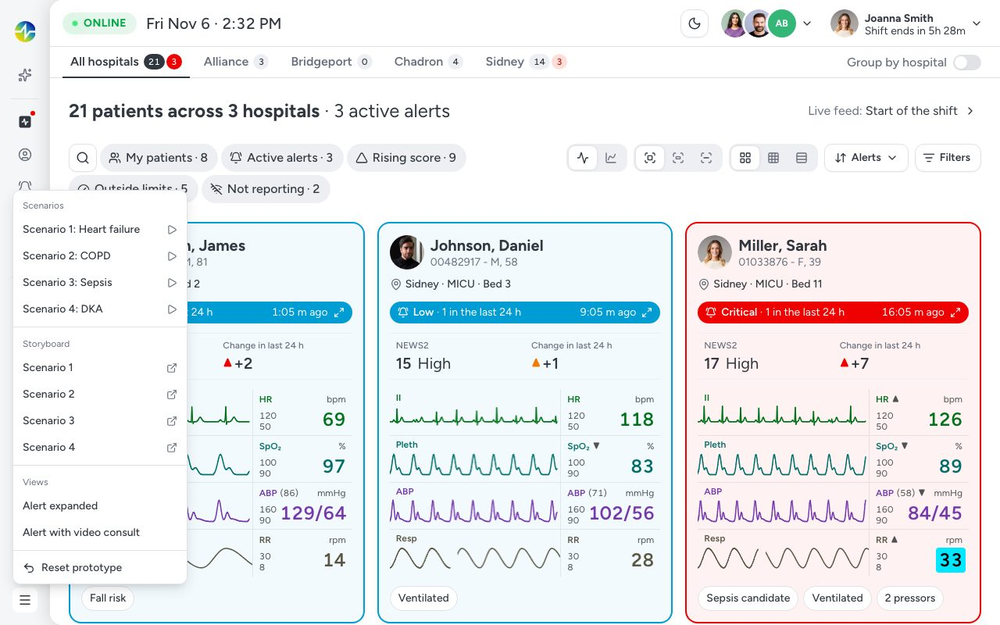
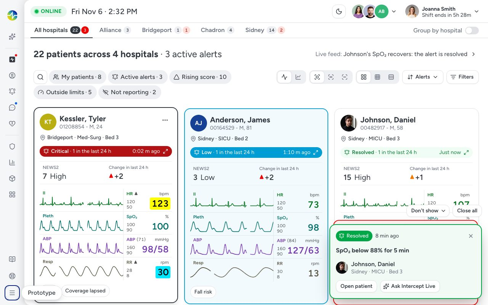
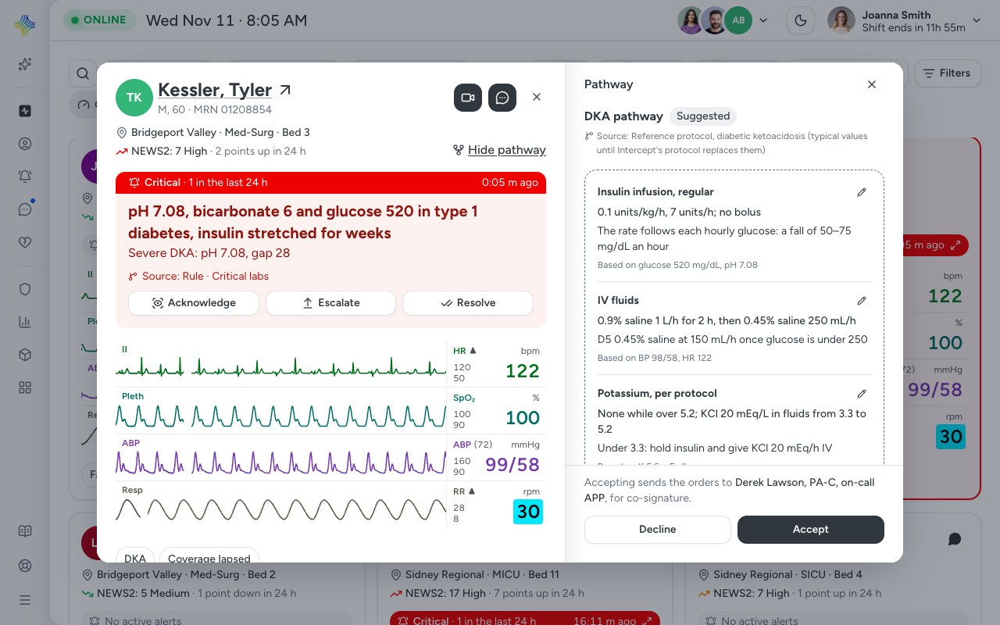
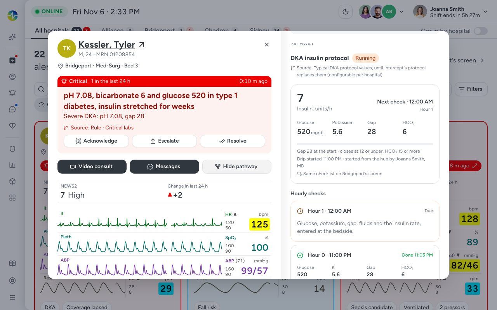
2. Built-in calculator
00:00 to 05:00Every hour the nurse enters the glucose, potassium, gap and fluids, and the platform works out the insulin rate. If the glucose falls too slowly, the rate goes up. If potassium drops under 3.3, the protocol stops insulin outright and prompts replacement: that's a hard stop, not a suggestion. When glucose falls under 250, it prompts dextrose and turns the rate down, so the drip can keep closing the gap without sending him low.
Steps
- Nothing to click. A check comes in every 6 seconds or so. At 02:00 the glucose fell only 29: the calculator raises the rate to 8 units/h.
- At 03:00 potassium is 3.1: the summary reads Held in red, and the check shows the hard stop, Insulin held, with Replace potassium under it. Seconds later the nurse documents KCl 20 mEq an hour, and at 04:00 (K 3.6) insulin is back on at 8 units/h.
- At 05:00 glucose is 238: Add dextrose, and the rate drops to 3.5 units/h. The summary keeps 8 running, "3.5 units/h waiting for sign-off" (beat 3).
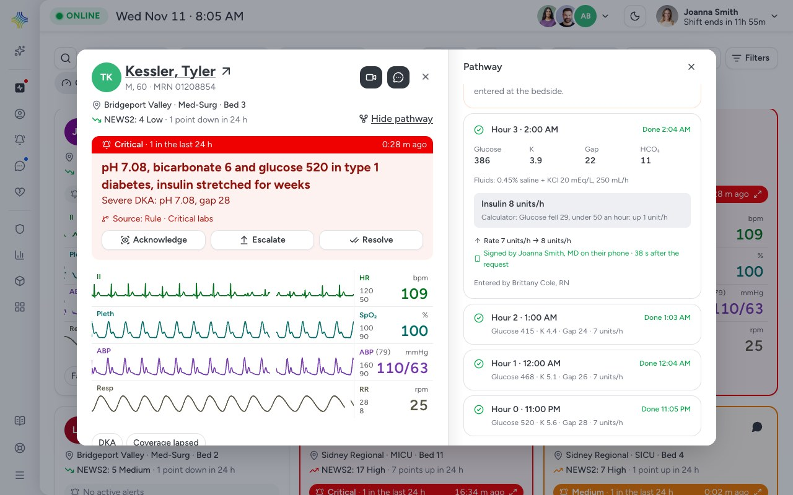
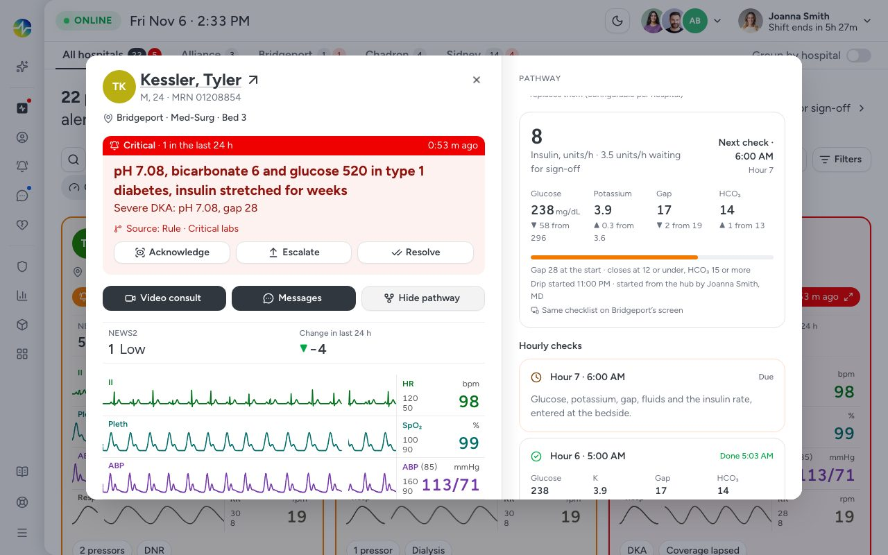
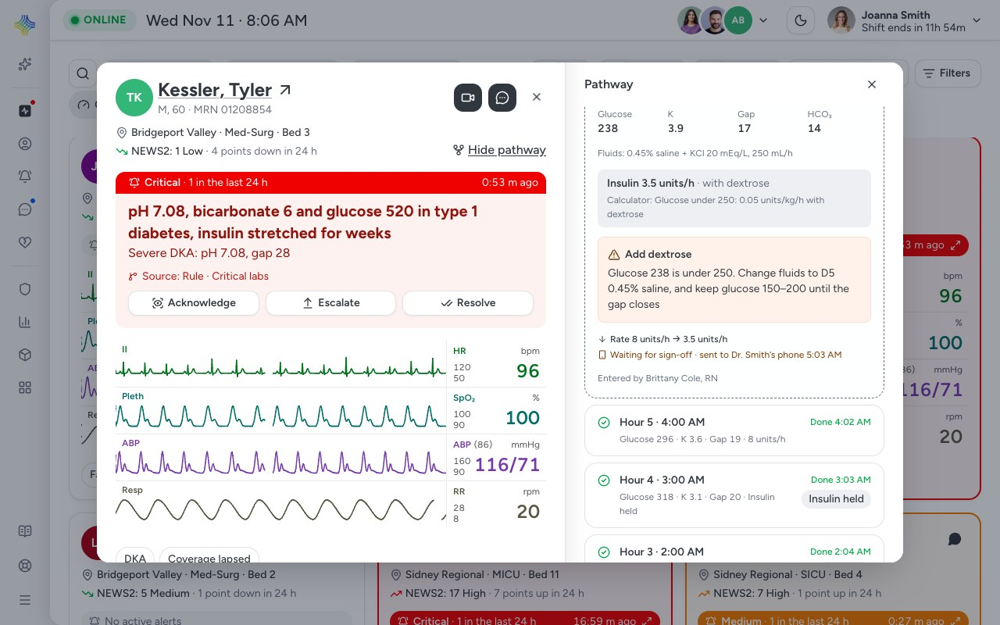
3. Hourly nudges
05:00 to 06:14Rate changes go to the intensivist's phone, and she signs them in under a minute. And with one nurse for the whole floor, a check can slip: if one is ten minutes overdue, the nurse and the hub's tele-RN both get an alert.
Steps
- About 5 seconds after the 05:00 check: Signed by Joanna Smith, MD on their phone · 41 s after the request, and the dextrose prompt turns green as the nurse switches the fluids. The summary now reads 3.5.
- About 6 seconds later the 06:00 check turns red, Overdue: "10 min overdue at 6:10 AM: nudged Brittany Cole, RN and Ava Brooks, tele-RN". With his alert closed, the same nudge toasts at the hub, with Open protocol.
- Seconds later the check is in, 14 min late; glucose 182 on dextrose, rate unchanged.
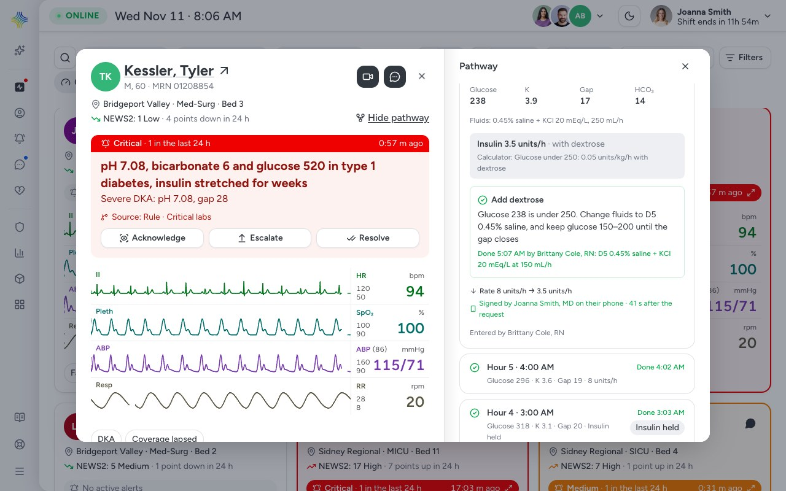
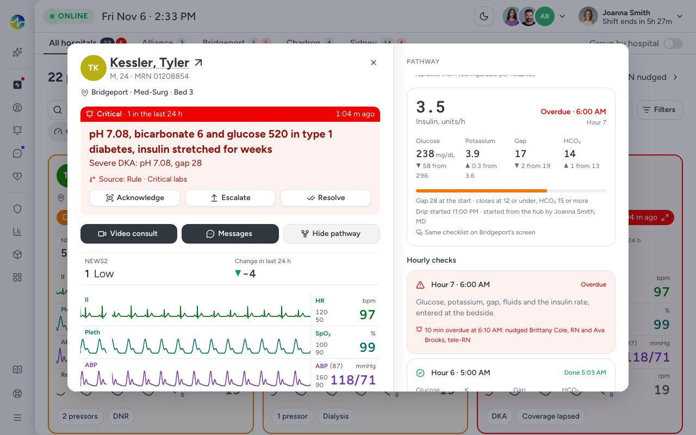
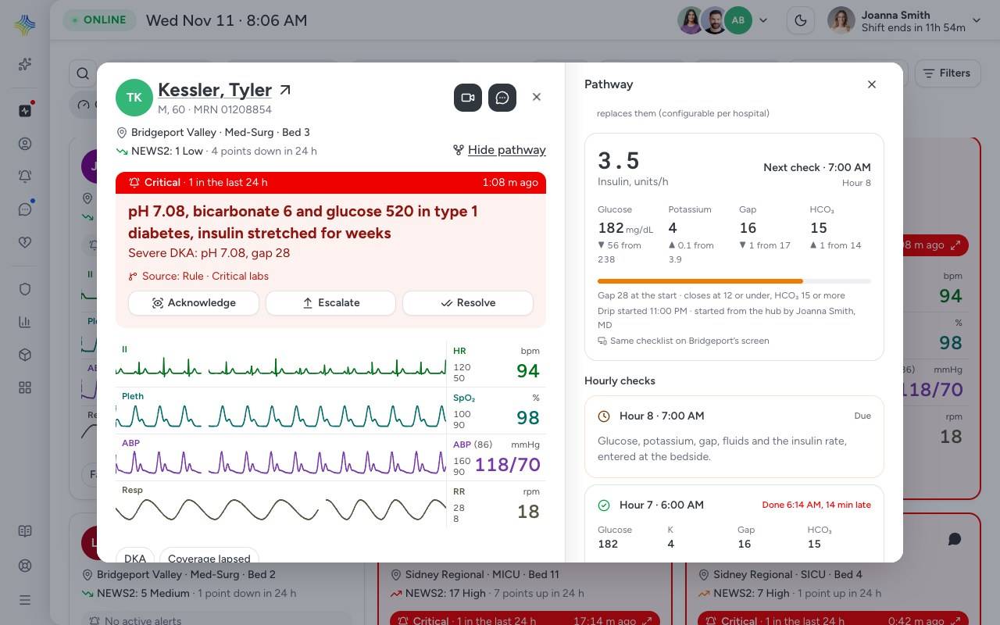
4. Gap closure
07:00 to 13:00The day nurse takes over the same checklist at seven. The anion gap closes at hour 13. Then the platform walks the switch to injected insulin: basal insulin first, the drip kept on another hour so there's no gap in coverage, then the drip stops.
Steps
- About 75 seconds after Accept, hours 8 to 12 arrive together, all on time, entered by Hannah Price, RN; one rate change at 09:00, signed in 29 s.
- About 7 seconds later, 12:00: gap 11, bicarbonate 19. The badge reads Gap closed, the bar turns green, and Moving to subcutaneous insulin opens: gap closed and eating ✓, glargine 22 units and lispro with lunch ✓.
- About 7 seconds later, 13:00: the overlap is done and the drip stops after 14 h (Drip stopped). His alert is Resolved by Derek Lawson, PA-C, and the outcomes are written.
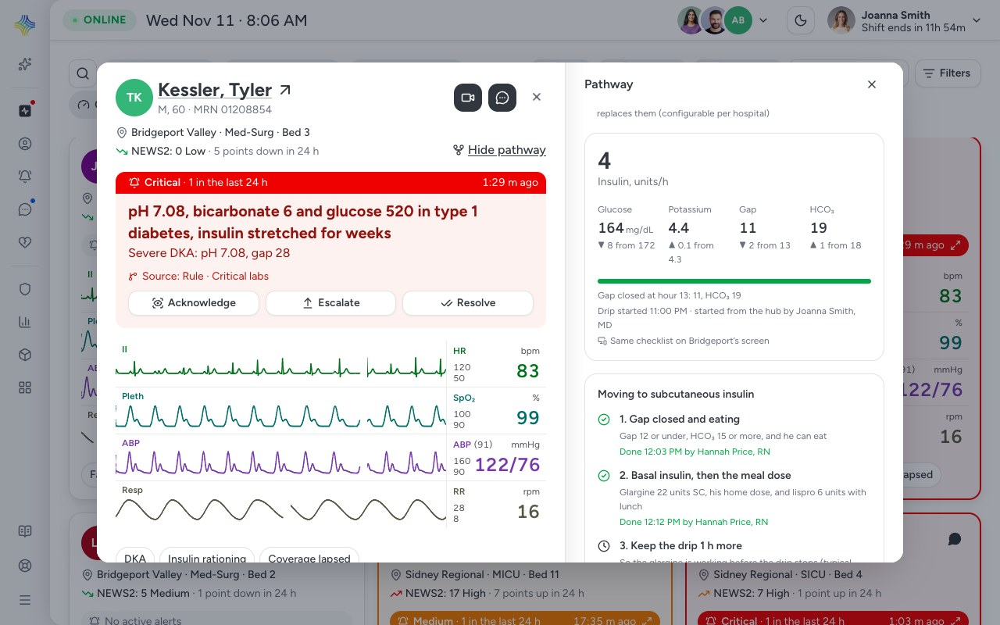
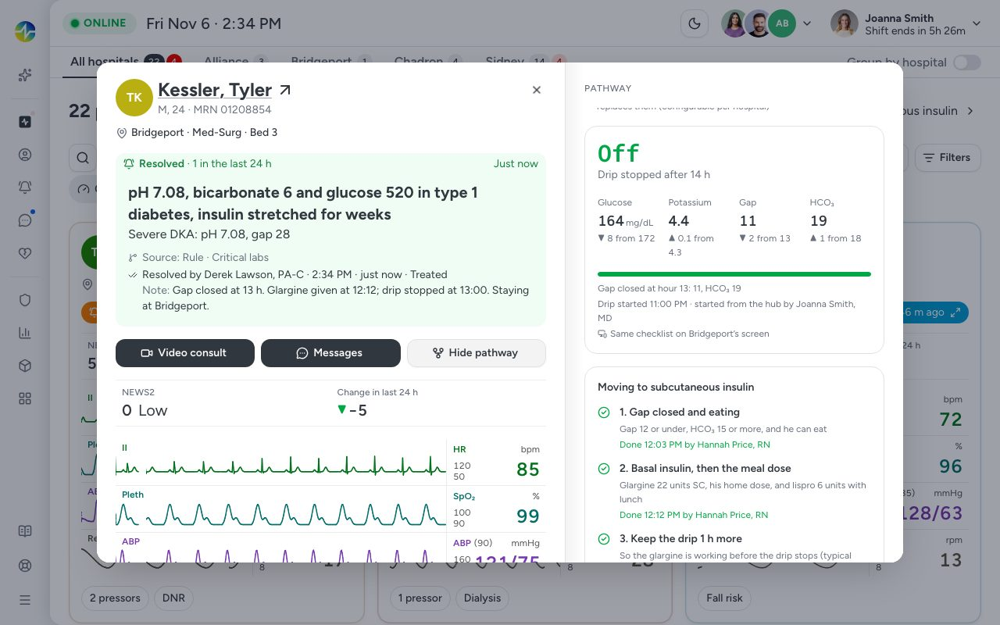
5. The cause, captured
07:30Why did a 60-year-old end up in DKA? Because insulin costs more than he could pay after losing his coverage, five years short of Medicare. The APP's admission note records that as a structured social-needs field, "cost-related insulin rationing", not a line buried in free text, so the discharge workflow and the reports can act on it.
Steps
- Nothing to click. About 68 seconds after Accept (07:30), an Insulin rationing flag joins his tags on every card and in his alert.
- Later, on his page, Notes › History and physical (Derek Lawson, PA-C) ends with Structured fields: Social need, Cost-related insulin rationing (Z91.120); Coverage, lapsed.
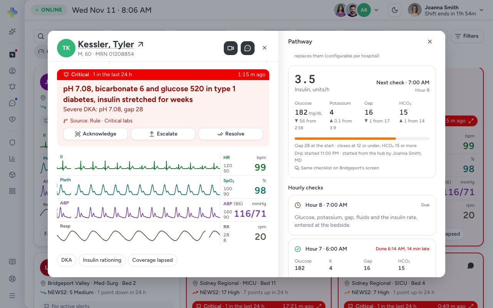
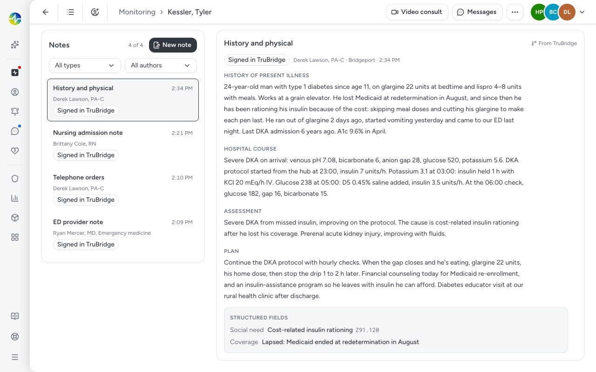
6. Prevention at discharge
13:00Treating the DKA isn't enough if he goes home and rations again. At discharge the platform drafts the referrals that fix the cause: Medicaid re-enrollment, a manufacturer's insulin-assistance program, and a diabetes educator visit at the rural health clinic down the road. The clinician sends each one, with who agreed.
Steps
- About 7 seconds after the drip stops, Social needs at discharge appears at the bottom of the Pathway column: Insulin rationing and Coverage lapsed, payer uninsured, and three referrals. With his alert closed, a toast says 3 referrals to send, with Review referrals.
- Send one: pick who agreed (The patient), then Send referral.
- Close his alert and click his card. His page shows the night: the brief, the care plan with the DKA pathway, his flags, a Discharge tab with the same referrals, and on Overview the log with the outcomes recorded (gap closed at 13 h, 13 of 14 checks on time, no hypoglycemia, one low potassium caught, the social need recorded, uninsured).
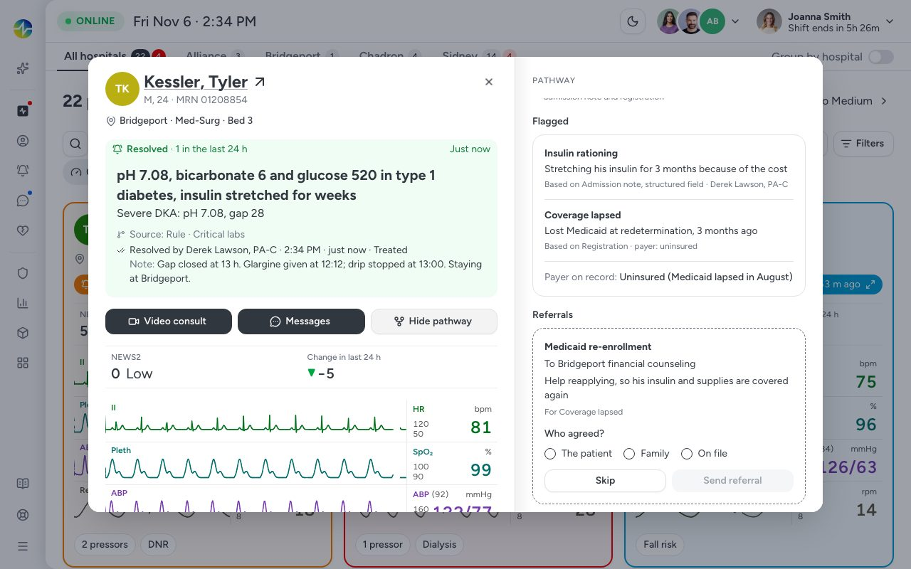
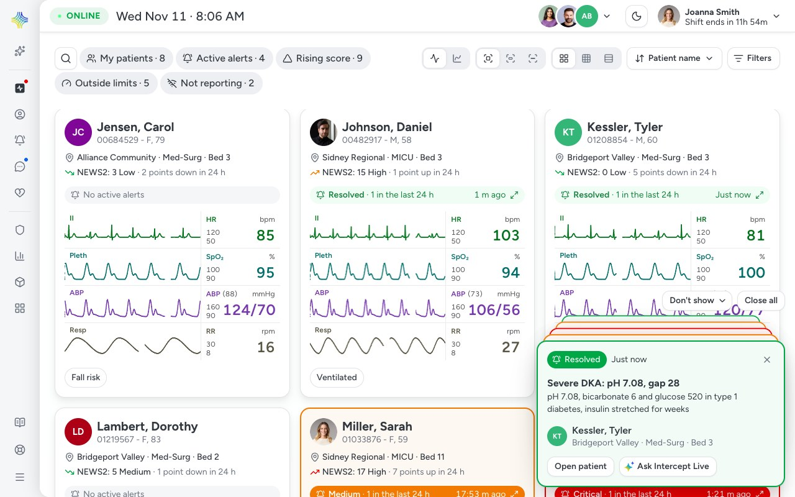
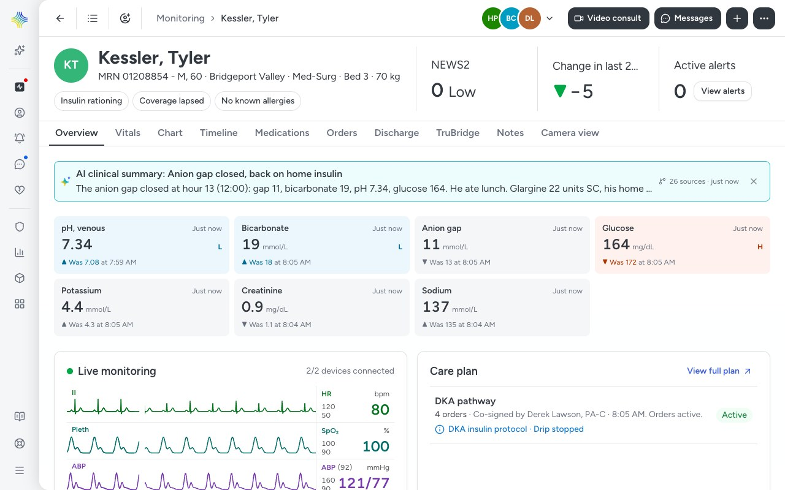
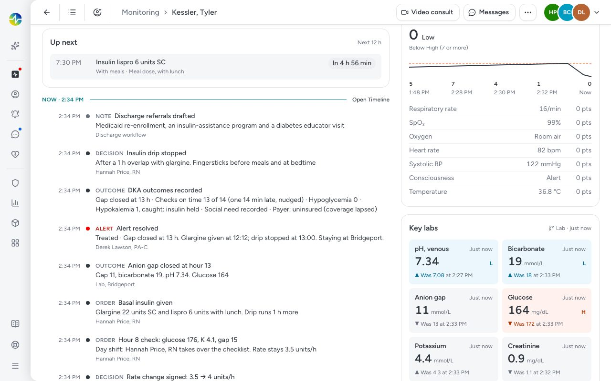
Known gaps
Where the prototype differs from the scenario, in case someone asks.
| What the audience sees | The scenario | Why |
|---|---|---|
| 14 hours pass in about 100 seconds; the checklist shows the night's times, the rest of the screen today's | 23:00 to 13:00 | The prototype runs on the real clock |
| "Same checklist on Bridgeport's screen" is a line of text; the hub's view stands in for the nurse's | The RN's screen becomes an hourly checklist | The nurse's own view (DU-25) isn't built yet |
| "Signed … on their phone" is a line in the checklist | The intensivist signs off rate changes from a phone | Mock, as the scenario marks it; the phone isn't built, and the hub can't sign in the panel yet |
| The overdue nudge shows at the hub (the check, and a toast) | The RN and the hub tele-RN both get an alert | The nurse's side isn't built |
| If you open his page before accepting the pathway, his medications already show the drip | — | His medications are built for the night, not rebuilt at each check |
| Referrals stay in the prototype | Referrals go out | Delivery to clinics and programs is funded work |
| Every threshold, the starting rate and the 1 h overlap | — | Typical DKA protocol values; replace them with Intercept's protocol before the demo (the scenario's clinical review) |